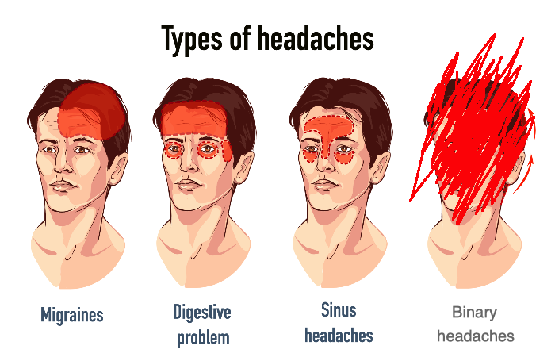
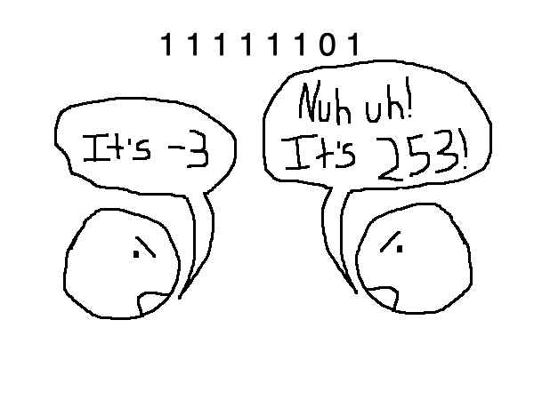
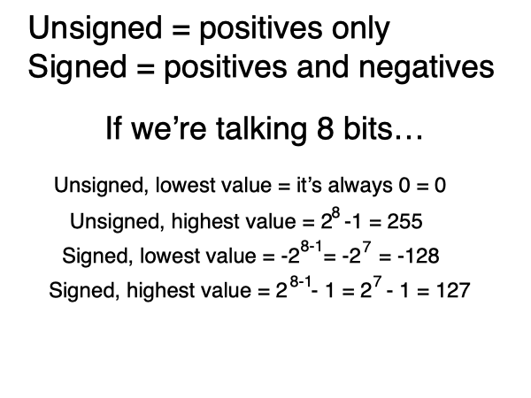
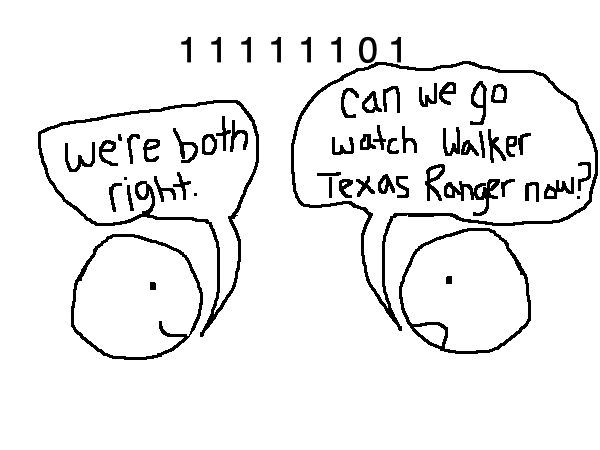
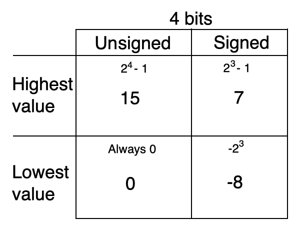

you smart good
Programming Concepts
Signed vs unsigned
Are you sick of math yet? Well too bad.
Just wait until we get to hexadecimal. Because oh boy, hexadecimal hurts my brain.

So we've learned a bit about positive and negative integers in binary. Now let me ask you a question . . .
If you see 1 1 1 1 1 1 0 1, how do you know if you're looking at -3 or 253?
It's time to talk about signed and unsigned integer data!

Because data only has a limited amount of storage, compromises must be made. Integer data can be stored unsigned(positives only) or signed(positives and negatives).
If we are working with 8-bit unsigned integer storage, our range is from 0 to 255.
If we are working with 8-bit signed integer storage, our range becomes -128 to 127.
In an unsigned system, the lowest integer value will always be 0, because we are not dealing with negatives. The highest value, as we learned in previous lessons, is 2n - 1, which in the case of 8-bit, is 255.
In a signed system, we have two equations to learn:
The lowest value will be -2n-1
The highest value will be 2n-1 - 1

So if we look at the example above, the value of 1 1 1 1 1 1 0 1 will depend on our data type.
If it's unsigned integer storage, this sequence would equal 253.
If it's signed integer storage, it would equal -3.

I feel like I just threw a lot of info at you. I hope you've been taking notes! Let's look at the main points:
1. Unsigned data contains only positive integers.
2. The lowest value in unsigned data is always 0. The highest value is: 2n-1.
3. Signed data contains both positive and negatives integers.
4. The lowest value in signed data is: -2n-1. The highest value in signed data is: 2n-1-1.
